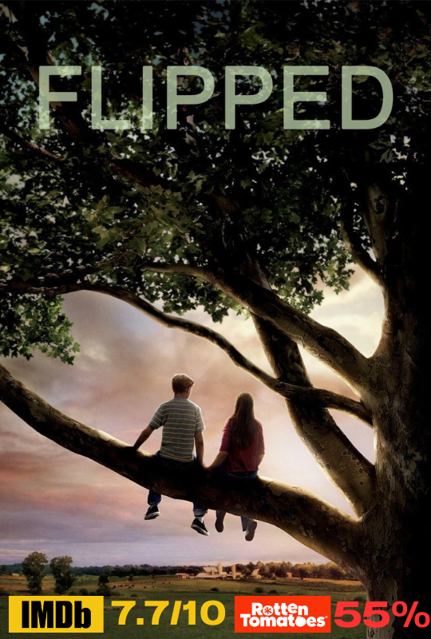
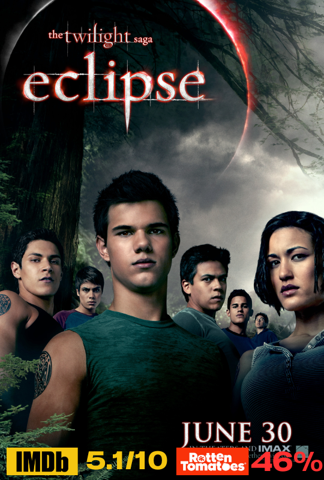

คะแนนรีวิวจากเว็บไซต์ IMDB 7.7/10
คะแนนรีวิวจากเว็บไซต์ Rotten Tomatoes 55%
เรื่องย่อ Flipped เป็นหนังรอมคอมวัยเด็กระหว่างจูลี่ (Madeline Carroll) เด็กสาวที่หลงรักไบรซ์ (Callan McAuliffe)
ตั้งแต่แรกพบ แต่เด็กหนุ่มกลับมองว่าเธอประหลาดและพยายามถอยหนี ตามสไตล์ล่ะครับ ยิ่งหนียิ่งเจอ ไป ๆ มา ๆ จากไม่สนใจเธอเป็นได้เรียนรู้ตัวตนเธอจนหลงรักเธอ
![ลัดดาแลนด์]](https://th.bing.com/th/id/R.4c4eee17e6462af8cb88c88c6669c518?rik=3a452QixS8DwzA&riu=http%3a%2f%2fwww.thaicinema.org%2fimages%2falltitles%2fknowingyou%2fposter02.jpg&ehk=wYB%2bsIpt%2bgBQNNm%2bj68O8YQej89yzymyDwnVAvt%2bxsk%3d&risl=&pid=ImgRaw&r=0)
เรื่องย่อ กวนมึนโฮ (ฉันทวิชช์ ธนะเสวี) ผู้ชายที่จะไปประเทศเกาหลี ด้วยรองเท้าแตะคีบ และเสื้อยืดย้วยๆบวกกางเกงขาสั้น
เขาเป็นคนเดียวในกรุ๊ปทัวร์ที่ไม่มีครอบครัวหรือคนรักมาด้วย บางทีที่นั่งว่างเปล่าข้างๆ อาจเป็นสาเหตุให้เขาเมามายขนาดนี้ในวันเดินทาง
หลังล้อเครื่องแตะพื้นผิวท่าอากาศยานกรุงโซลโปรแกรมเที่ยวตามรหัส 6-7-8 คือ ตื่นนอน 6 โมงเช้า - กินข้าว 7 โมงเช้า ล้อหมุน 8 โมงเช้า
คืนนั้นชายหนุ่มเลยต้องพึ่งเหล้าโซจู ซึ่งเขามาเมาสลบอยู่หน้าเกสท์เฮาส์แห่งหนึ่งในชุดคลุมอาบน้ำโรงแรม เช้าวันรุ่งขึ้น
ชายหนุ่มลุกพรวดขึ้นมาหมิ่นเหม่เวลาล้อหมุน หญิงสาว (หนึ่งธิดา โสภณ) ที่ยืนอยู่ตรงนั้นร้องโวยวาย เพราะต้องการทวงเสื้อหนาวที่เธอเสียสละให้เขาใช้คลุมกายคืน
ชายหนุ่มผู้หลงทางจึงบังคับแกมตีมึนให้หญิงสาวพาไปส่งที่โรงแรม แต่เพราะหลงทางเสียเวลา หลงเสพสุราเสียอนาคต ชายหนุ่มตกรถพลาดทัวร์สุดเนิร์ด
จนต้องตามหญิงสาวที่ตั้งใจมาทัวร์เดี่ยวตะลุยโลเกชั่นซีรีส์สสุดฮิตของเกาหลีแทนชายหนุ่มอดสงสัยไม่ได้ว่า ทำไมหญิงสาวถึงมาเที่ยวคนเดียว เธอตอบง่ายๆว่า
เที่ยวคนเดียวไม่ต้องเกรงใจใคร อยากไปไหนก็ไป ไม่ต้องทะเลาะกับใครด้วย อาจเพราะความคะนอง หรือ ความเหงาทำงานเต็มที่ก็สุดจะเดา อยู่ๆ ชายหนุ่มก็ยื่นข้อเสนอว่า
"งั้นเรามาเที่ยวด้วยกันมั้ย ถ้าเธอไม่ชอบเที่ยวกับคนรู้จัก เราก็ไม่ต้องรู้จักกัน ไม่รู้ชื่อ ไม่รู้ข้อมูลส่วนตัว" เขายิ้มร่าพลางสรุป "เราจะเป็นแค่คนแปลกหน้าสองคนที่ไปเที่ยวด้วยกัน"

คะแนนรีวิวจากเว็บไซต์ IMDB 5.1/10
คะแนนรีวิวจากเว็บไซต์ Rotten Tomatoes 46%
เรื่องย่อ Eclipse เบลล่า สวอน นางเอกของเรื่อง ที่ไม่เหมือนเด็กสาววัยรุ่นทั่วไป เธอไม่สนใจวัตถุนิยม ไม่ตามเทรนด์ ซึ่งพ่อแม่ได้หย่าร้างกัน โดยเธอได้อาศัยอยู่กับแม่
ต่อมา แม่ของเธอได้แต่งงานใหม่ เบลล่าคิดว่านี่จะเป็นการเปิดโอกาสให้กับแม่ของเธอ เธอจึงย้ายไปอยู่กับพ่อที่ฟอร์คส, สหรัฐอเมริกา ที่ฟอร์คสเป็นเมืองที่ฝนตกตลอดปี
ไม่มีแดด มีต้นไม้เขียวชอุ่ม เธอจำใจย้ายมาอยู่ เพราะสามีใหม่ของแม่เป็นนักเบสบอลและต้องเดินทางบ่อย และแม่ต้องคอยดูแลเธออยู่ที่บ้าน เธอคิดว่ามันทำให้แม่ไม่มีความสุขนัก
เมื่อวันแรกที่เธอได้ย้ายเข้ามาโรงเรียนไฮสคูลใหม่ เธอคิดว่ามันก็คงไม่ต่างอะไรจากโรงเรียนเก่าของเธอ แต่นั่นทำให้เธอได้พบกับนักเรียนชายผู้เพอร์เฟ็ค
เขาทั้งรูปงาม แข็งแรง และฉลาดมากต่างจากนักเรียนชายทั่วๆไป เขามีนามว่า เอ็ดเวิร์ด คัลเลน ในตอนเช้า เธอเห็นเขาจ้องเธอตลอดอย่างไม่ละสายตา
แต่เมื่อเธอและเขาต้องมานั่งใกล้กันตอนเรียนวิชาชีววิทยาเนื่องจากเหลือที่นั่งข้างเขาเพียงที่เดียว เขากลับไม่สนใจเธอแม้แต่น้อย และทำท่าทางเหมือนรังเกียจเธอ ภายหลัง
เขาได้หายตัวไปเป็นเวลา 1 สัปดาห์ และกลับมาใหม่เอ็ดเวิร์ดเคยช่วยชีวิตเบลล่าจากรถตู้ที่จะชนเธอด้วยการที่เขาหยุดมันด้วยมือเปล่า ทำให้เบลล่าตกตะลึงเป็นอย่างมาก
และอีกหลายครั้งที่เขาช่วยเธอจากเหตุการณ์ที่ไม่คาดฝัน เขาอ่านใจทุกคนได้ แต่มันใช้ไม่ได้กับเธอ ต่อมา เบลล่าได้รู้ว่าเอ็ดเวิร์ดเป็นแวมไพร์และครอบครัวของเขาต่างจากแวมไพร์ทั่วไป
ครอบครัวเขาละเว้นการดื่มเลือดมนุษย์แต่ล่าสัตว์ใหญ่บนภูเขาสูงแทน ก่อนหน้านั้นเอ็ดเวิร์ดสงสัยในตัวเบลล่า จึงแอบเข้าไปที่ห้องนอนเธอในขณะที่เธอหลับ เขาได้ยินเธอพึมพำเรียกชื่อเขาออกมา
เขาจึงได้รู้ว่าทั้งเธอและเขาต่างตกหลุมรักซึ่งกันและกัน แต่ทุกอย่างไม่ได้ดีเสมอไป เมื่อเจมส์, วิคตอเรีย และ ลอเรนท์ คู่ปรับของเอ็ดเวิร์ดได้เดินทางมาฟอร์คส พวกเขาคิดว่าการที่เอ็ดเวิร์ดสูญเสียคนรัก
จะทำให้เขาต้องเจ็บปวดในชีวิตที่เป็นอมตะของตนเอง ความรัก ความเป็นอมตะ แวมไพร์ มนุษย์ นิรันดรกาล การสูญเสีย ยามแรกรัตติกาล จะทำให้เขาและเบลล่ารักกันได้หรือ
4.Even If This Love Disappears Tonight (2022)
เรื่องย่อ เพราะถูกแรงกดดันจากเพื่อนร่วมชั้นที่มักจะกลั้นแกล้งเขา โทรุ คามิยะ จึงจำใจสารภาพความรู้สึกกับเพื่อนผู้หญิงที่เรียนห้องเดียวกับเขา มาโอริ ฮิโนะ ว่าเขารู้สึกชอบเธอ
พวกเขาจึงวางแผนที่จะออกเดตด้วยกัน โดยที่มีเงื่อนไขเพียงอย่างเดียวที่ว่า "ห้ามตกหลุมรักกันเด็ดขาด" และความสัมพันธ์ของคู่ในฐานะคู่เดตก็ไปเป็นได้สวย
กระทั่งโทรุผิดเงื่อนไขสัญญาที่ให้กันไว้ เพราะเขาตกหลุมรักมาโอริเข้าอย่างจัง และเมื่อเขาเอ่ยปากสารภาพความรู้สึกจริง ๆ กับเธอด้วยใจจริง
เธอจึงตอบสวนกลับมาว่า...เธอป่วยเป็นโรคที่หายาก มีภาวะอาการหลงลืมเหตุการณ์ต่าง ๆ ที่เกิด ในทุกเช้าที่ตื่นขึ้นมาวันใหม่
ทำให้เธอต้องจดบันทึกไดอารี่เก็บเรื่องราวของวันเก่า ๆ เอาไว้อ่าน เพื่อให้ตัวเองระลึกนึกถึงความทรงจำอย่างไร้รอยต่อ และนั่นจึงทำให้โทรุเลือกที่จะนำพาความทรงจำดี ๆ
มาให้เธอได้มีความสุขไปในทุก ๆ วัน...
เรื่องย่อ บนโลกใบนี้ คงมีชายหญิงอีกหลายคู่ที่กำลังไต่อยู่บนตะเข็บชายแดนแห่งความสัมพันธ์ของความเป็น “เพื่อน” กับ “แฟน” ซึ่งพื้นที่เล็ก ๆ
ริมชายแดนตรงนี้ มีชื่อเรียกแบบสากลว่า FRIEND ZONE หรือเขตแดนพิเศษของ คนที่อยู่ในสภาพ...กลับตัวไปเป็นเพื่อนก็ไม่ได้ ให้ไปเป็นแฟนก็ไปไม่ถึง
ปาล์ม (นาย ณภัทร เสียงสมบุญ) คือหนึ่งในคนที่ติดอยู่ใน FRIEND ZONE ของ กิ๊ง (ใบเฟิร์น พิมพ์ชนก ลือวิเศษไพบูลย์) เพื่อนสนิทของเขามานานเป็น 10 ปี
ปาล์มเคยพยายามจะออกจากเขตแดนพิเศษนี้ ด้วยการสารภาพรักกับกิ๊งไปตอน ม.ปลาย แต่ถูกกิ๊งปฏิเสธง่าย ๆ ด้วยคำว่า “เป็นเพื่อนกันก็ดีอยู่แล้ว”
ปีการศึกษา 2555 "สอง" (บี้ สุกฤษฎิ์ วิเศษแก้ว) อดีตนักกีฬามวยปล้ำตกอับต้องผันตัวเองมาเป็นครูยังโรงเรียนแห่งหนึ่งที่กว่าจะไปถึงต้องออกเดินทางตั้งแต่เช้ามืด
ขึ้นรถผ่านผืนป่า ลงเรือฝ่าผืนน้ำหลายชั่วโมง โรงเรียนซึ่งตั้งอยู่กลางเขื่อน โอบล้อมด้วยภูเขาและผืนน้ำอันกว้างใหญ่ "โรงเรียนบ้านแก่งวิทยา สาขาเรือนแพ"
โรงเรียนแห่งนี้ถูกสร้างขึ้นเพื่อให้เด็กๆลูกชาวประมงที่ไม่มีโอกาสออกไปนอกเขื่อนได้มีโอกาสเรียนหนังสือ สองต้องสอนเด็กๆสุดแสบที่แม้จะมีเพียง 4 คน
แต่ก็ล้วนเรียนกันคนละชั้นกันหมด แถมเขายังต้องสอนเด็กๆทุกวิชาทุกชั้นเรียนด้วยตัวคนเดียว ยิ่งไปกว่านั้นเขายังต้องทนกับสภาพที่ไม่มีทั้งไฟฟ้าน้ำประปา
หนำซ้ำต้องผจญกับความเหงาที่ไม่สามารถติดต่อใครได้เพราะที่โรงเรียนนี้ไม่มีสัญญาณโทรศัพท์

เรื่องย่อ เรื่องราวในวัยเด็กของ "เจี๊ยบ" ที่มีเพื่อนสนิทคือ "น้อยหน่า" เด็กหญิงข้างบ้าน ที่เป็นเพื่อนเล่นมาด้วยกันตลอด แต่เด็กชายก็อยากมีเพื่อนๆ
ผู้ชาย และเล่นตามประสาเด็กชายบ้าง ทำให้เขาหันไปเข้ากับกลุ่มเด็กชายจอมซ่า ที่มี "แจ๊ค" เป็นหัวโจก ทว่าการเข้ากับกลุ่มของแจ๊ค
กลับทำให้น้อยหน่าเพื่อนรักต้องเสียใจ และยังทำให้เจี๊ยบพลั้งพลาดทำร้ายจิตใจของน้อยหน่าโดยไม่ตั้งใจ กว่าเจี๊ยบจะรู้ตัวว่าทำให้น้อยหน่าเสียใจ
เธอก็ย้ายบ้านไปเสียก่อนที่เขาจะได้เอ่ยปากคำว่าขอโทษออกมาหลังจากย้ายบ้านไปเป็นเวลานาน เจี๊ยบได้กลับมาอีกครั้งเพื่อร่วมงานแต่งงาน ของ น้อยหน่า
ความทรงจำในวัยเด็กที่เคยเลือนราง แต่เมื่อหลับตาลง ความทรงจำต่างๆ กลับค่อยๆ แจ่มชัดเหมือนเพิ่งผ่านไปเมื่อไม่กี่วันก่อน เจี๊ยบกับน้อยหน่า
บ้านของทั้งสองอยู่ติดกันจึงเป็นเพื่อนเล่นกันตั้งแต่เด็ก เหตุนี้ทำให้เจี๊ยบติดสอยห้อยตามน้อยหน่า และคลุกตัวอยู่กับเพื่อนผู้หญิง จนทำให้แก๊งเพื่อนผู้ชายยั่วเย้าให้หัวเสียอยู่บ่อยๆ
แต่เมื่อเริ่มโต เจี๊ยบก็เริ่มอยากเที่ยวเล่นแบบเด็กผู้ชาย จึงพยายามพิสูจน์ตัวเองแม้จะทำให้น้อยหน่าเสียใจก็ยอม เจี๊ยบเพียรมาด้อมๆ มองๆ บ้าน น้อยหน่าเพื่อหาโอกาสกล่าวคำขอโทษ
กระทั่งยอมมาตัดผมกับพ่อน้อยหน่าที่บ้านก็ยอม แต่จนแล้วจนรอด เจี๊ยบก็ยังไม่ได้ขอโทษสักที จนถึงวันที่น้อยหน่าต้องย้ายบ้านไปอยู่ที่จังหวัดอื่น
คะแนนรีวิวจากเว็บไซต์ IMDB 8.8/10
คะแนนรีวิวจากเว็บไซต์ Rotten Tomatoes 76%
เรื่องย่อ ในช่วงสามทศวรรษแห่งความโกลาหล ฟอร์เรสท์ ดำเนินชีวิตผ่านกระแสช่วงเหตุการณ์ต่างๆที่ผันเขาจากคนร่างกายพิการไปเป็นดาราอเมริกันฟุตบอล
จากวีรบุรุษในสงครามเวียดนามเป็นเศรษฐีธุรกิจเรือกุ้ง จากเกียรติยศแห่งทำเนียบขาวไปสู่อ้อมกอดของผู้ที่เขามีใจรักจริง ฟอร์เรสท์คือลักษณะรูปธรรมแห่งยุค
คือความไร้เดียงสาในดินแดนอเมริกาที่กำลังสูญเสียความบริสุทธิ์ จิตใจของเขาตระหนักต่อสิ่งที่ไอคิวอันจำกัดของตัวเองไม่อำนวย ขอบข่ายศีลธรรมของเขาไม่เคยคลอนแคลน
ชัยชนะทั้งหลายของเขากลายเป็นแรงบันดาลใจแก่เราทุกคน
9.สิ่งเล็กๆที่เรียกว่ารัก (2010)

เรื่องย่อ น้ำสาวน้อย ม.1 วัย 14 หน้าตาธรรมดา ๆ และไม่สวย แต่เธอไปแอบชอบ พี่โชน พี่ม.4 ที่หล่อ เท่ ที่สุดในโรงเรียน
แล้วแถมยังใจดีอีกต่างหากทำให้น้ำมีคู่แข่งเป็นสาว ๆ ทั้งม.ต้นและม.ปลาย ที่มีแต่คนสวย ๆ เต็มไปหมด แต่น้ำไม่ยอมแพ้ง่าย ๆ
เธอพยายามลุยทำทุกอย่าง สู้ทุกรูปแบบเพื่อที่จะเก่งและสวย แล้วเด่นขึ้นในโรงเรียนให้ได้ เพราะแอบหวังในใจเล็ก ๆ
ว่าถ้าทำสำเร็จพี่โชนอาจจะหันมามองเธอซักครั้ง
น้ำทำตั้งแต่เอามะขามเปียกมาขัดผิว สมัครเป็นนางรำแม้จะถูกคัดออก หัดเป่าคาริเน็ตแล้วสมัครเข้าวงโยธวาทิตเพื่อที่จะได้อยู่ใกล้ ๆ
พี่โชน ด้วยความช่วยเหลือของเพื่อน ๆ แก๊งหน้าแย่ ในที่สุดน้ำก็ได้เป็นดรัมเมเยอร์มือหนึ่งของจังหวัด จนตอนที่เรียนอยู่ ม.3 เธอได้เป็นดาวของโรงเรียน
น้ำตกเป็นเป้าสายตาของหนุ่ม ๆ ทั้งโรงเรียน มีคนเข้ามาจีบเป็นสิบ ๆ คน ยกเว้น โชน คนที่เธอรอคอยอยู่คนเดียว
น้ำไปสารภาพรักกับพี่โชนในวันสุดท้ายของวันสอบและน้ำก็ได้อกหักกลับมาเพราะโชนได้เป็นแฟนกับปิ่นแต่ในใจลึกๆของโชนแล้วนั้นยังคงรักน้ำมาตั้งแต่ตอนที่น้ำยังไม่สวย
ผ่านไป 9 ปี ทั้งโชนและน้ำ ได้มาพบกันในรายการทีวีรายการหนึ่ง...
10.Long Live Love! (2023)
เรื่องย่อ เรื่องราวความรักกระท่อนกระแท่นของ สติ สองร่าง และ เมตตา เมื่อทั้งคู่กำลังจะแยกทางจบปัญหาชีวิตคู่ที่เรื้อรัง โชคชะตาก็เล่นตลก
สติประสบอุบัติเหตุตื่นขึ้นมาในสภาพไร้ความทรงจำ โดยมีการถ่ายรูป Now& Then ที่สามารถนำเขากลับเข้าไปเหตุการณ์อดีตของรูปถ่ายใบนั้นได้
สติได้กลับไปเผชิญสิ่งที่เคยทำไว้กับเมตตา และ นะโม ลูกสาววัยเฮี้ยนที่เกลียดเขาเข้าไส้ ความวายป่วงจึงเริ่มขึ้นเพราะเมียและลูกของเขาพร้อมที่
จะหาจังหวะแก้แค้นเขาตลอดเวลาการรีสโตร์ความทรงจำผ่านการถ่ายรูปทำให้สติคนใหม่ต้องต่อสู้กับตัวตนคนเดิมในอดีต
ความเปลี่ยนไปของสติในปัจจุบันสั่นคลอนความเกลียดชังของเมตตาและนะโม สติจะกอบกู้ความรักในครอบครัวได้หรือไม่?
เมตตาจะเริ่มต้นใหม่อีกครั้งได้อย่างไร เมื่อการให้อภัยเป็นสิ่งที่เธอไม่เคยทำมันตลอดชีวิตคู่